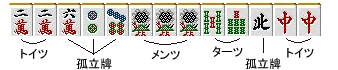
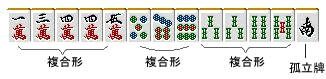

基本形与复合形
到此为止的课程中，麻将的基本形已经全部出现了。
・面子（刻子、顺子、杠子）
・搭子（两面听、嵌张、边张）
・对子
・孤立牌
麻将的手牌全部可以分割为这4种。
让我们用具体例子来看看吧。
【例1】


假设得到这样的起手牌

像这样，可以分割为基本形的部件。
像这样用部件分割考虑手牌是非常重要的。
为了防止简单错误，我认为初学者时认真理牌后再打是稳妥的。
【例2】


那么，例2会怎么样呢？
万子·饼子·索子全部都是复合形。
如果进一步将这些分割为基本形的话，就会产生问题。
万子的话

 （搭子） +
（搭子） + 
 （对子） +
（对子） +  可以分割，
可以分割，
也可以考虑为

 （面子） +
（面子） +  +
+  。
。
不是哪个解释是正确的，
我强烈建议"复合形作为复合形来把握"。

麻将牌是通过组合产生复杂功能的东西。为了不漏看那些功能，我认为作为知识记住各个复合形的性质是最好的。
复合形的模式有无数个，要全部覆盖是不可能的吧。但是，继续打麻将的过程中会对形式变强，即使遇到稀有的形式也应该能容易地应对。
之后介绍基本的复合形。
理论·总结
手牌由"面子"、"搭子"、"对子"、"孤立牌"这4种以上的组合构成。
2个以上要素复合的复合形，会产生基本形没有的性质。
分别了解复合形的性质是很重要的。